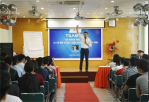

Sinh viên FPT Polytechnic giành Quán quân "FPThackathon 2018"

FPT Edu Hackathon là cuộc thi tổ chức bởi Tổ chức Giáo dục FPT ( FPT Education) dành cho sinh viên Công nghệ thông tin theo mô hình Hackathon nổi tiếng của thế giới
Sinh viên khối ngành Kinh tế học cách "chạm" vào cảm xúc
Với sự tham gia của chuyên gia trong lĩnh vực kinh doanh, chương trình đã thu hút đông đảo sinh viên Cao đẳng FPT Polytechnic tham dự.Đặc biệt các bạn sinh viên lôi cuốn bởi.
Sinh viên FPT Polytechnic giành Quán quân "FPThackathon 2018"

FPT Edu Hackathon là cuộc thi tổ chức bởi Tổ chức Giáo dục FPT ( FPT Education) dành cho sinh viên Công nghệ thông tin theo mô hình Hackathon nổi tiếng của thế giới